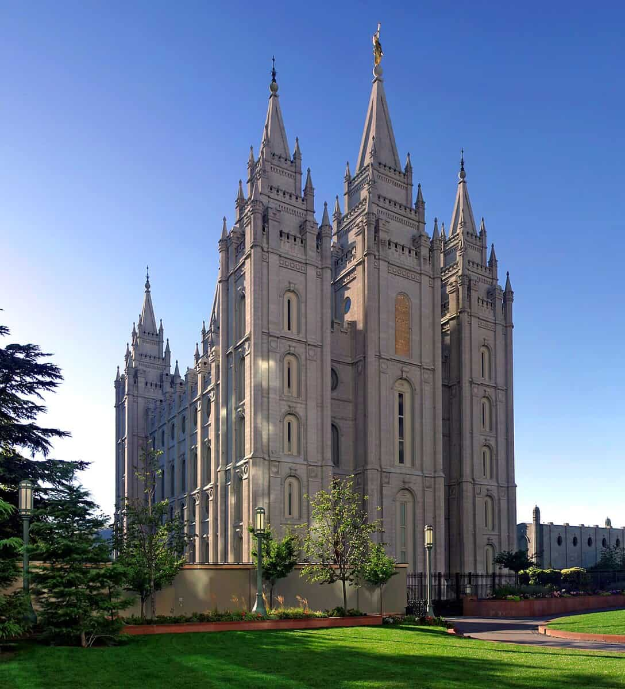
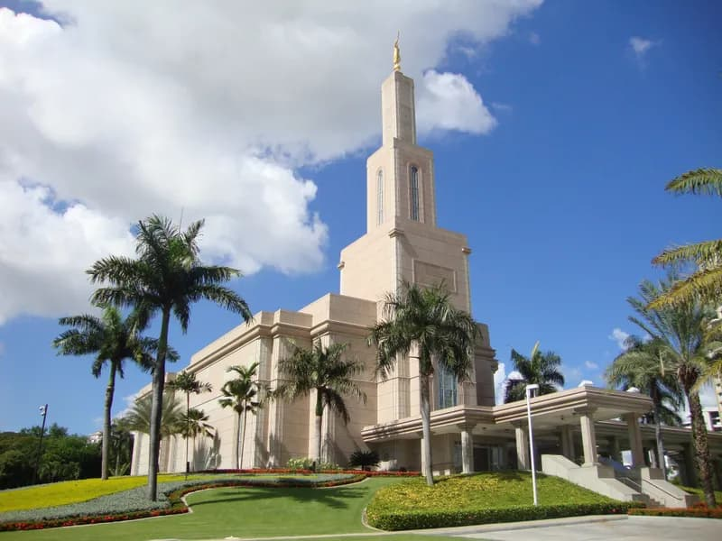
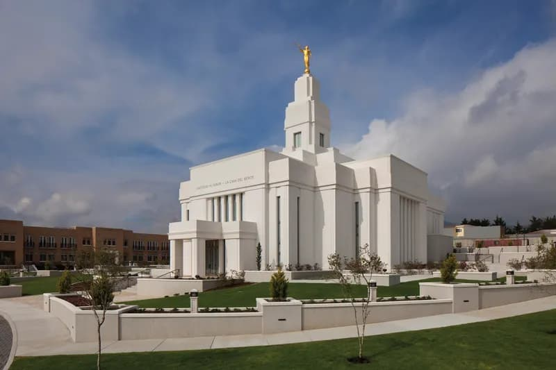
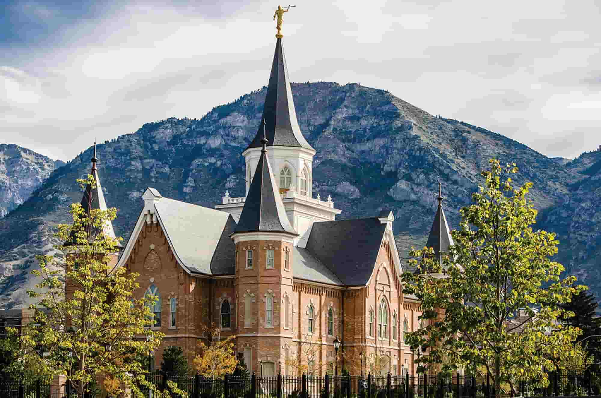
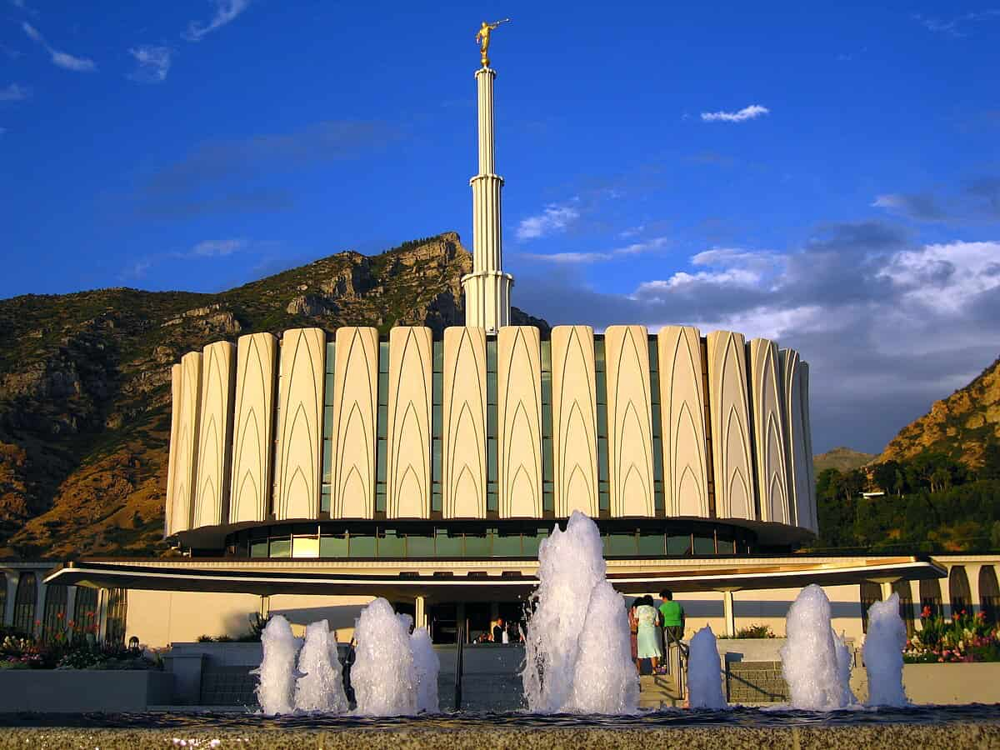
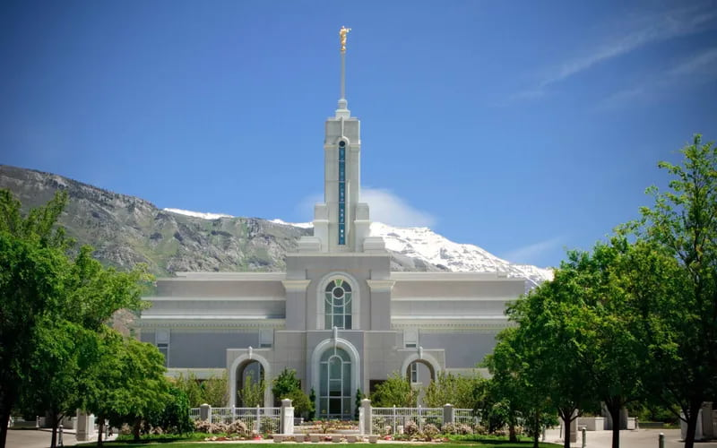
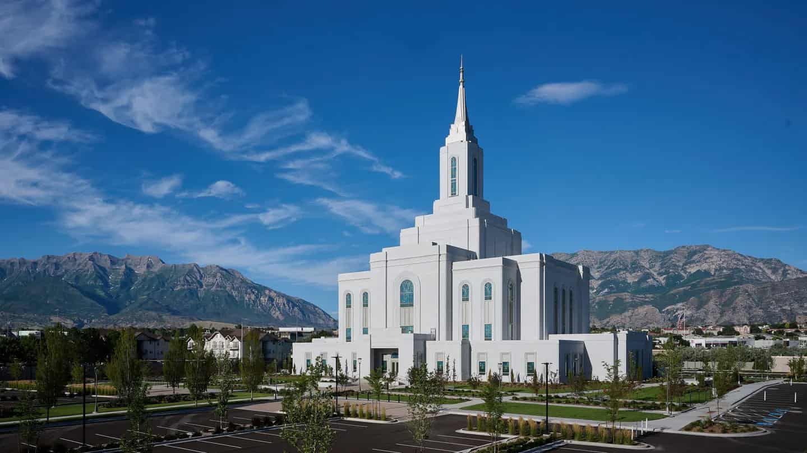
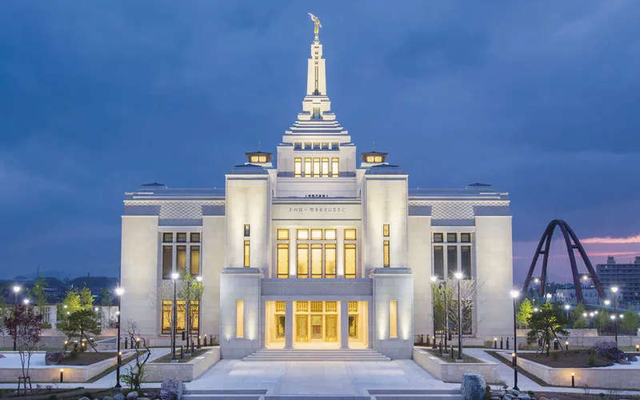

Temple Album
☰
home
Old
New
Large
Small
Home

Salt Lake city Temple.

Santo Domingo, DR Temple.

Quetzaltenango, Guatemala Temple.
Ciudad de Guatemala Temple.

Provo Temple.

Provo Hill, Temple.

American fork, Temple.

Orem, temple.

Sapporo, Japan Temple.